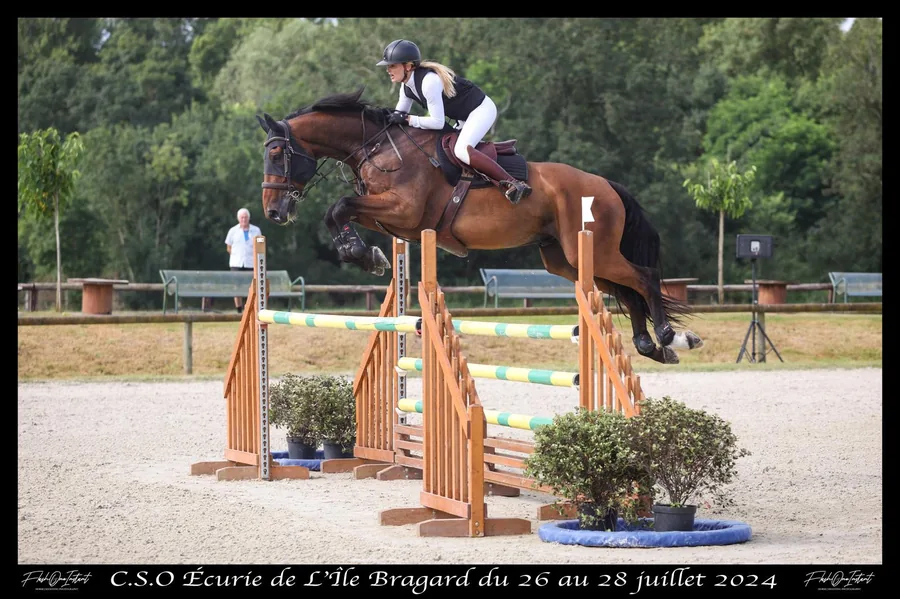

Alice Moranval-Vincent, cavalière professionnelle (CSI 3★, 1m40) et coach diplômée DEJEPS, encadre des cours particuliers, des stages collectifs et du coaching en concours. Le travail part du cheval et du couple : équilibre, cadence, trajectoire, puis mise en situation.

Les dates, lieux et tarifs se calent directement avec Alice selon la saison et les échéances de concours.
Faut-il venir avec son cheval ?
Oui : le stage se travaille avec votre cheval ou poney. Pour un cas particulier, écrivez à Alice.
Y a-t-il un niveau minimum ?
Le contenu s'adapte au couple et à l'objectif. Les débutants sont orientés vers un cursus progressif.
Peut-on organiser un stage dans son club ?
Oui, les stages se déplacent en Hautes-Alpes et en Auvergne-Rhône-Alpes.
Réponse par mail — précisez votre niveau, votre cheval et vos échéances.